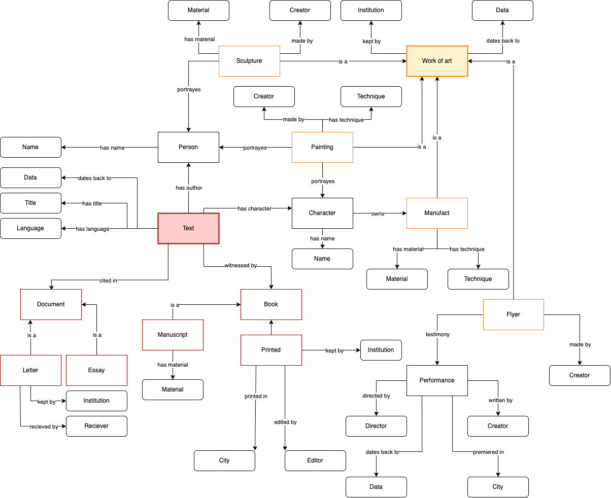

The Conceptual Map
The Conceptual Map represents the real data as extracted from the chosen items, together with the explicit relationships.

The Conceptual Map represents the real data as extracted from the chosen items, together with the explicit relationships.
An Entity-Relationship Model is a translation of the Conceptual Map in a more abstract formalism, which is focused exclusively entities, relationships and attributes
Description and outcome of metadata scouting
| Item | Object | Institution | Metadata Standard |
|---|---|---|---|
| Portrait of Ludovico Ariosto | Painting | National Gallery, London | CCO |
| Letter to Pietro Bembo | Letter | Archivio di Stato, Modena | ISAD(G) |
| Ms. S. Mart. 353 | Manuscript | Biblioteca Nazionale Vittorio Emanuele III, Biblioteca San Martino, Neaples | TEI/XML |
| Editio Princeps, ed. Mazzocchi | Printed book | Biblioteca Nazionale Centrale, Florence | Unimarc |
| Orlando furioso in English heroical verse | Printed book | Boston Public Library | MARCXML |
| Cor de Roland | Work of art | Musée Paul Dupuy, Toulouse | CDWA |
| Roland furieux | Statue | Musée du Louvre, Paris | CDWA |
| Fresco by Nicolà dell'Abate | Painting | Pinacoteca Nazionale, Bologna | CCO |
| Flyer by Cervellati | Flyer | Genius Bononiae, Biblioteca dell'Archiginnasio, Bologna | EAD/XML |
| Orlando, HWV 31 | Score | Petrucci Music Library | ISBD |
| Six memos for the next millennium, Italo Calvino | Printed Book | Biblioteca Salaborsa, Bologna | Unimarc |
Description and outcome of metadata alignment